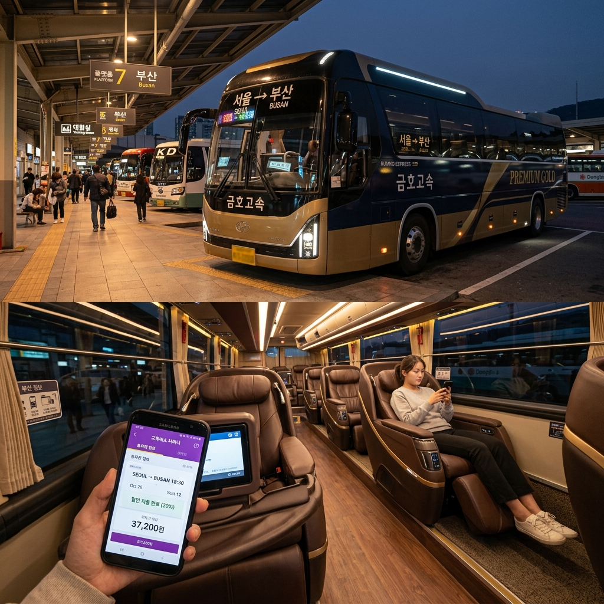
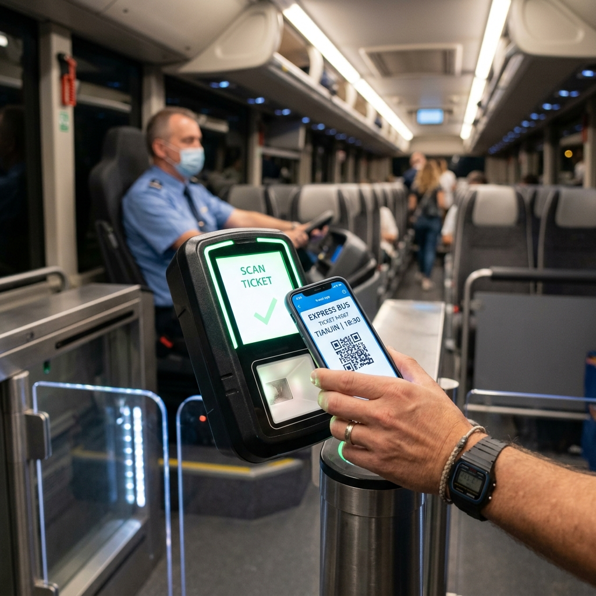

고속버스 할인 카드와 예매 앱 혜택 비교 — 왕복 할인·조기예매 중복 적용 기준과 요금 절약 계산표
고속버스를 이용해 장거리 출장이나 고향 방문, 주말여행을 떠날 때 승차권 예매 방법과 결제 카드 선택만 잘해도 회당 수천 원에서 수만 원까지 요금을 절약할 수 있습니다.
티머니GO 앱 예매 시 제공되는 GO마일리지 적립 혜택부터 조기예매 10% 할인, 왕복 예매 추가 할인, 청소년·대학생 대상 할인율까지 다양한 할인 제도가 운영되고 있지만, 어떤 항목들이 서로 중복 적용되고 제외되는지 명확히 알고 있는 승객은 많지 않습니다.
신용카드 및 체크카드의 대중교통 청구할인 혜택과의 연계 방법부터 K-패스 환급 적용 불가 규정, 출발 시간대별 취소 수수료 공제율 계산표까지 고속버스 이용객을 위한 실전 요금 절약 가이드를 알기 쉽게 정리해 드립니다.

고속버스 모바일 예매 앱과 현대식 프리미엄 버스 플랫폼 / AI 제작 이미지
01 | 고속버스 요금 할인 제도 구조와 중복 적용 핵심 요약
고속버스 운임 체계는 국토교통부의 여객자동차 운송사업 운임 요율 기준을 따르며, 일반·우등·프리미엄 등 등급별 기본요금에 각종 할인 제도가 차등 적용되는 구조를 갖추고 있습니다.
많은 이용객이 궁금해하는 핵심은 "여러 가지 할인 혜택을 한 번에 중복해서 받을 수 있는가"입니다.
원칙적으로 고속버스 운임의 자체 법정·제도적 할인(청소년, 대학생, 국가유공자, 조기예매, 왕복할인 등)은 '가장 할인율이 높은 1가지'만 단일 적용되는 것이 기본 규칙입니다.
하지만 티머니GO와 같은 예매 플랫폼에서 자체 제공하는 '모바일 앱 마일리지 적립'이나 '쿠폰 할인', 그리고 결제 단계에서 적용되는 '신용카드 대중교통 청구할인'은 고속버스 승차권 할인과 이중·삼중으로 중복 적용이 가능합니다.
따라서 승차권 자체의 사전·왕복 할인을 먼저 적용받은 후, 제휴 카드로 결제하여 청구할인을 챙기고, 플랫폼 마일리지까지 적립하는 3단계 전략을 활용해야 실질적인 최대 절약 효과를 누릴 수 있습니다.
02 | 티머니GO 앱 예매 혜택과 마일리지 적립·환급 기준
현재 전국 고속버스 공식 모바일 예매 플랫폼은 티머니(Tmoney)에서 운영하는 '고속버스 티머니' 및 통합 모빌리티 앱인 '티머니GO(Tmoney GO)'로 일원화되어 있습니다.
특히 티머니GO 앱을 통해 고속버스를 예매하고 탑승하면 결제 금액의 일정 비율이 'GO마일리지'로 자동 적립됩니다.
신규 가입 프로모션이나 월간 정기 챌린지를 달성할 경우 결제 금액의 3~5%가 추가 적립되며, 적립된 마일리지는 다음번 승차권 예매 시 1원 단위부터 현금처럼 차감 결제할 수 있습니다.
또한 티머니GO 내에서 고속버스와 서울·지자체 따릉이(공공자전거) 또는 택시를 연계 이용할 경우 '환승 리워드'가 지급되어 회당 500원에서 최대 1,000원의 마일리지가 환급됩니다.
기존 종이 승차권 발권 없이 모바일 QR코드 하나로 검표기를 태그하고 즉시 탑승할 수 있어 시간 절약과 편의성 면에서도 앱 예매가 압도적으로 유리합니다.
03 | 고속버스 조기예매 및 왕복 예매 할인율과 적용 조건
고속버스 운송사들은 비수기 승객 유치와 사전 예약 활성화를 위해 '사전 예매(조기예매)'와 '왕복 예매' 할인 제도를 상시 운영하고 있습니다.
조기예매 할인은 탑승일 기준 최소 2일 전(D-2)까지 왕복 승차권을 한 번에 결제하거나, 30일 이내에 동일 노선을 왕복할 때 운임의 10%를 할인해 주는 제도입니다.
또한 평일(월~목요일) 승차권을 사전 예매할 경우 노선 및 운송사에 따라 5~10%의 추가 요금 인하 혜택이 적용되는 경우가 많습니다.
단, 명절 특별 수송 기간(설날, 추석 연휴)이나 여름 휴가 성수기(7월 말~8월 초), 특정 주말 황금연휴 기간에는 조기예매 및 왕복 할인 적용이 전면 제외되므로 예매 화면에서 할인 금액 반영 여부를 반드시 확인해야 합니다.
심야 고속버스나 할증이 붙는 새벽 시간대 노선은 조기예매 할인율이 기본요금에만 한정 적용될 수 있다는 점도 유의할 필요가 있습니다.
04 | 청소년·대학생·아동 연령별 고속버스 할인율과 증빙 서류
고속버스는 대중교통 공공성 확보를 위해 연령대별 법정 할인 제도를 철저히 시행하고 있습니다.
| 구분 |
연령 및 자격 기준 |
할인율 |
적용 가능 버스 등급 |
탑승 시 필수 증빙 |
| 유아 (무임) |
만 6세 미만 (좌석 미배정) |
100% 무료 |
전 등급 (보호자 1인당 1명) |
주민등록등본 (모바일 확인) |
| 아동 (초등생) |
만 6세 이상 ~ 만 13세 미만 |
50% 할인 |
일반·우등·프리미엄 전 등급 |
학생증, 청소년증, 등본 |
| 청소년 (중고생) |
만 13세 이상 ~ 만 18세 이하 |
20% 할인 |
일반고속 (우등·프리미엄 제외 노선 다수) |
학생증, 청소년증 |
| 대학생 (협약 노선) |
대학교 재학생 |
10%~20% 할인 |
운송사 협약 지방 노선 한정 |
모바일 학생증, 재학증명서 |
특히 청소년 할인의 경우 일반고속 버스에는 전면 적용되지만, 우등고속이나 프리미엄 버스에는 지자체 및 운송사 협약에 따라 할인이 배제되는 노선이 있으므로 예매 시 확인이 필요합니다.
모바일 앱에서 청소년 요금으로 예매했더라도 탑승 시 검표원이 신분증 제시를 요구할 수 있으므로, 청소년증이나 모바일 학생증을 반드시 소지해야 하며, 미지참 시 성인 요금 차액을 현장에서 추징당할 수 있습니다.
05 | 나라사랑카드 및 국가유공자·군인 할인 혜택 비교
국방의 의무를 다하고 있는 현역 군인과 국가유공자를 위한 특별 요금 감면 제도 역시 마련되어 있습니다.
국가유공자(독립유공자, 상이군경 등)는 유공자증을 제시할 경우 상이 등급에 따라 30%~70% 감면 또는 무임 승차가 지원되며, 일반·우등 고속버스에서 폭넓게 혜택을 받을 수 있습니다.
현역 병사의 경우 '나라사랑카드'(KB국민, IBK기업)를 이용하여 고속버스 승차권을 결제하면 전월 실적 조건 충족 시 5%~10% 청구할인(월 한도 내)을 돌려받을 수 있습니다.
또한 군인 휴가증을 소지하고 터미널 창구에서 현장 발권하거나 국방 복지 포털 연계 사이트를 이용할 경우 특정 운송사 협약 노선에 한해 군인 전용 할인(10%)이 지원되는 경우도 있으므로 출타 전 복지 혜택을 점검하는 것이 유리합니다.
06 | 고속버스 결제 청구할인 신용카드·체크카드 BEST 혜택 비교표
승차권 자체의 사전 예매 할인 외에 가장 큰 절약 무기는 바로 '대중교통 특화 카드'의 결제 청구할인입니다.
대다수 카드사에서 '고속버스' 가맹점을 대중교통 카테고리로 분류하여 5%에서 최대 20%까지 할인 또는 캐시백을 제공합니다.
| 카드사 및 상품명 |
고속버스 할인 혜택 |
월 통합 할인 한도 |
전월 이용 실적 조건 |
| 신한카드 B.Big(삑) |
대중교통 일 200원~600원 정액 할인 |
월 최대 18,000원 |
전월 30만 원 이상 |
| KB국민 알뜰교통/대중교통 |
고속버스·시외버스 10% 청구할인 |
월 5,000원~10,000원 |
전월 30만 원 이상 |
| 삼성카드 iD MOVE |
대중교통 및 고속버스 10% 결제일 할인 |
월 최대 12,000원 |
전월 40만 원 이상 |
| IBK 기업 나라사랑카드 |
고속버스 결제 시 5% 청구할인 |
월 최대 5,000원 |
전월 20만 원 이상 |
단, 일부 신용카드의 경우 '시내버스 및 지하철'만 대중교통으로 인정하고 '고속버스·철도'는 제외하는 조항이 있으므로 카드 상품 약관의 '대중교통 가맹점 세부 인정 기준'을 사전에 체크해야 합니다.

고속버스 승차권 모바일 QR 태그 및 자동 개찰 풍경 / AI 제작 이미지
07 | K-패스 환급 대상 여부와 시외·고속버스 적용 불가 규정 안내
많은 승객이 가장 많이 혼동하는 제도 중 하나가 바로 정부의 'K-패스(The 경기패스, 인천 I-패스 포함)' 환급 여부입니다.
결론부터 명확히 말씀드리면, 고속버스와 시외버스는 K-패스 환급 대상 교통수단에 포함되지 않습니다.
K-패스 및 광역교통패스는 전국 시내버스, 마을버스, 광역버스(신분당선, 수도권 광역급행철도 GTX 포함), 도시철도 등 '도시 내 및 광역 생활권 대중교통'에 한정하여 이용 횟수 기반 20~53%를 환급해 주는 제도입니다.
고속버스와 KTX·SRT 일반열차는 '장거리 지역 간 간선 교통수단'으로 분류되어 K-패스 단말기 태그가 불가능하며, 승차권 결제액에 대한 K-패스 환급금 역시 지급되지 않습니다.
따라서 고속버스를 이용할 때는 K-패스 카드의 패스 환급 기능 대신, 카드 상품 자체에 탑재된 일반 대중교통 청구할인 서비스나 티머니GO 마일리지를 노리는 것이 올바른 전략입니다.
08 | 취소 수수료 시간대별 공제율과 위약금 없는 취소 타이밍
일정이 급히 변경되어 승차권을 취소해야 할 때 취소 타이밍에 따라 수수료가 크게 달라집니다.
고속버스 모바일 취소 수수료는 여객자동차 운송사업법 표준약관에 따라 출발 시간 전후를 기준으로 정밀하게 차등 적용됩니다.
⚠️ 고속버스 승차권 취소 수수료 기준표
· 예매 후 1시간 이내 : 출발 시간 무관 수수료 0원 (전액 환불)
· 출발 2일 전(D-2)까지 : 수수료 0원 (전액 환불)
· 출발 1일 전 ~ 출발 1시간 전 : 결제 금액의 5% 공제
· 출발 1시간 전 ~ 출발 직전 : 결제 금액의 10% 공제
· 출발 후 목적지 도착 전 : 결제 금액의 30% 공제 후 환불
· 목적지 도착 예정 시간 이후 : 환불 불가 (운임 100% 소멸)
출발 당일이라도 예매를 완료한 시점으로부터 1시간 이내에 취소하면 당일 취소 수수료가 면제되므로, 잘못 예매했거나 일정이 바뀌었다면 즉시 취소 버튼을 누르는 것이 손실을 막는 핵심입니다.
09 | 고속버스 승차권 예매 전 최종 할인 적용 계산표와 체크리스트
실제 서울-부산 우등고속 노선(편도 기준 운임 약 39,000원)을 예매할 때 결합 전략에 따른 실부담 요금을 계산해 보면 다음과 같습니다.
💡 서울-부산 우등고속 요금 절약 시뮬레이션
· 정상 요금 : 39,000원
· 1단계 (사전 왕복 예매 10% 적용) : 39,000원 - 3,900원 = 35,100원
· 2단계 (대중교통 카드 10% 청구할인) : 35,100원 결제 시 카드 대금 청구서에서 3,510원 추가 차감 (실부담 31,590원)
· 3단계 (티머니GO 3% 마일리지 적립) : 결제액 기준 1,053원 마일리지 적립
· 최종 체감 운임 : 30,537원 (총 8,463원 / 약 21.7% 실질 할인 효과)
📋 고속버스 예매 출발 전 필수 체크리스트
1. 티머니GO 앱 설치 및 로그인 : 기본 마일리지 적립 및 환승 리워드 혜택 활성화.
2. 왕복 일정 확정 시 사전 예매 : 출발 2일 전까지 왕복으로 묶어 10% 조기예매 할인 확보.
3. 대중교통 할인 신용카드 결제 : 고속버스 가맹점 청구할인 제공 카드(전월 실적 충족 여부 확인) 사용.
4. 신분증 지참 : 청소년·대학생·유공자 요금 예매 시 현장 확인용 신분증 필수 소지.
5. QR코드 캡처 백업 : 터미널 네트워크 지연 대비 탑승 전 모바일 승차권 화면 캡처 저장.
이와 같은 할인 결합 전략을 실천하여 장거리 이동 시 교통비 부담을 시원하게 줄여보시길 바랍니다.
#고속버스할인
#티머니GO할인
#고속버스조기예매
#고속버스왕복할인
#청소년고속버스할인
#대중교통할인카드
#K패스고속버스
#고속버스취소수수료
#고속버스마일리지
#교통비절약팁